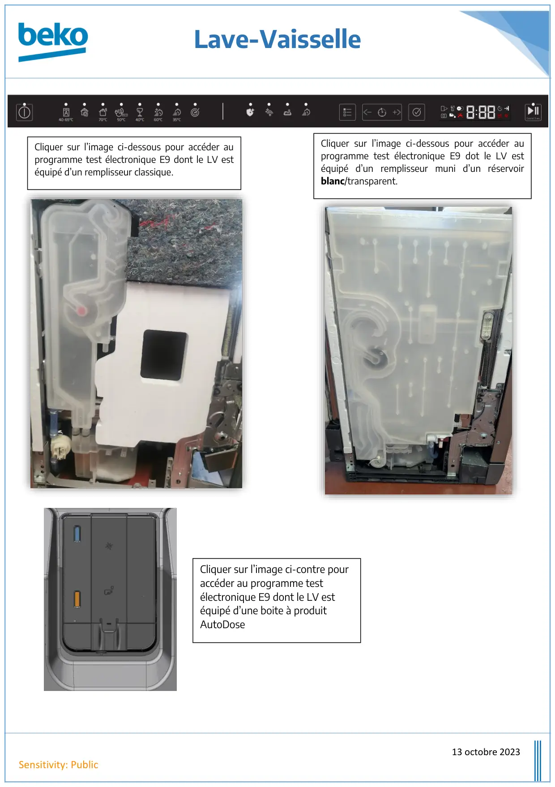

Lave vaisselle electronique E9 Accueil

Lave-Vaisselle13 octobre 2023Sensitivity: PublicCliquer sur l’image ci-dessous pour accéder auprogramme test électronique E9 dont le LV estéquipé d’un remplisseur classique.Cliquer sur l’image ci-dessous pour accéder auprogramme test électronique E9 dot le LV estéquipé d’un remplisseur muni d’un réservoirblanc/transparent.Cliquer sur l’image ci-contre pouraccéder au programme testélectronique E9 dont le LV estéquipé d’une boite à produitAutoDose
1 / 1